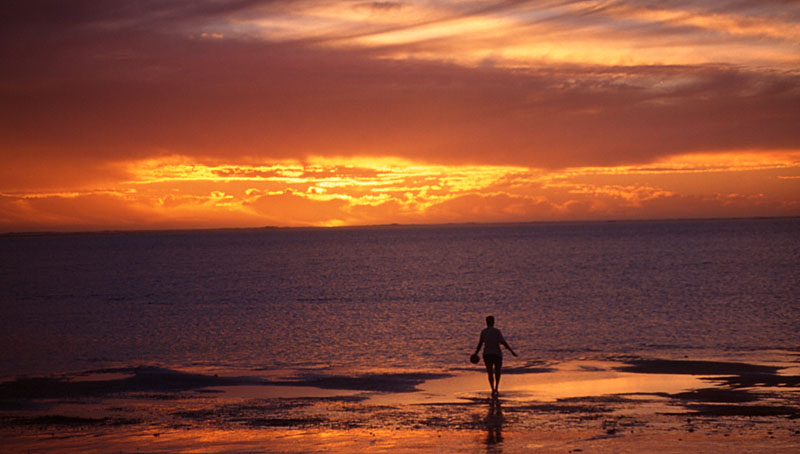
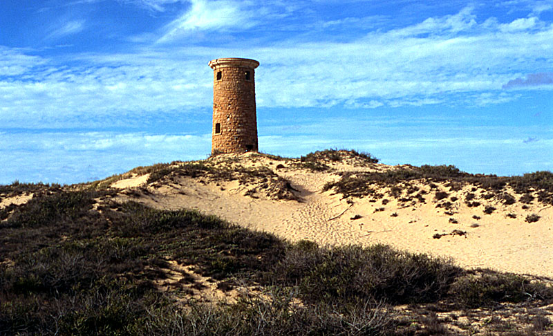
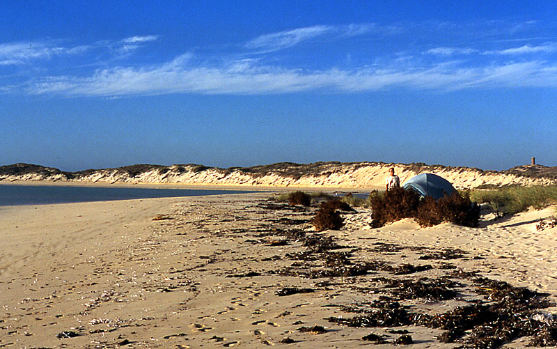
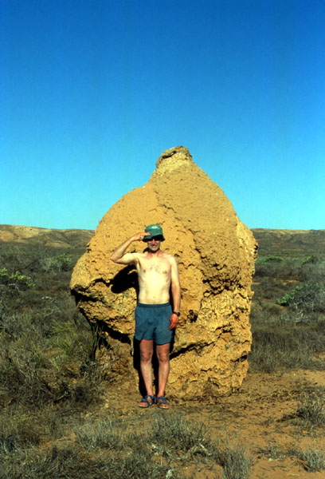
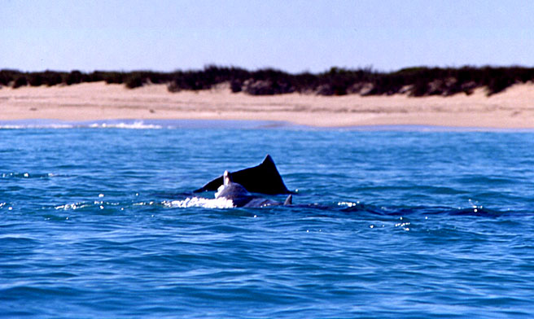
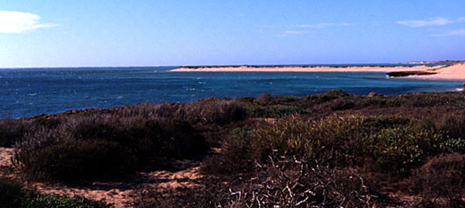
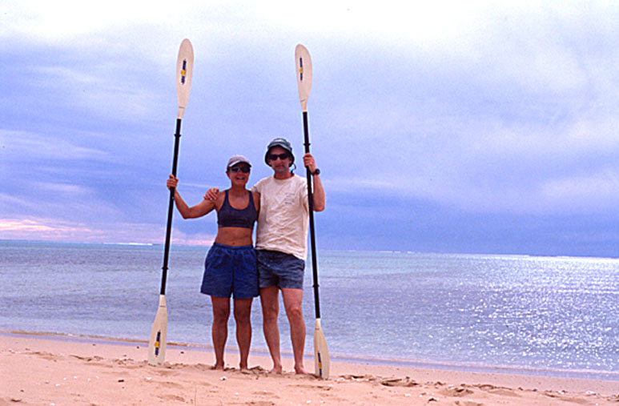

|
Dolphins, Sharks and Turtles: Kayaking Ningaloo Reef (by Sandy)
The lagoon inside Ningaloo Reef is ideal for ocean kayaking. The paddling is through mostly protected waters with moderate tidal currents (average tide is about 2 metres and current about 2 knots). However, the reef is not contiguous, and there are several deep water gaps which allow the large NW swells into the lagoon. At times, kayakers must paddle through these swells and dodge breaking waves. Surf landings may be necessary. The winds can be strong (up to 30 knots), predominantly from the SW, but occasionally out of the north. This is desert country and there is no shade and no fresh water. The map shows our route from Coral Bay to Tantabiddi. We estimated our water consumption at 7 litres per day ( a remarkably accurate guess) and, as it is impossible to carry 16 days worth of water in the kayak, we left 40 litres at Ningaloo Homestead, and buried another 30 litres in the sand on the shoreline at Yardie Creek.  North West Australian Sunset Coral Bay to The Lagoon: It feels good to leave the commercialization of Coral Bay and paddle north through the calm waters of Coral Bay to Point Maud. Just north of Point Maud, there are ruins of an old jetty. This is the site of the planned Ningaloo Reef Resort, a hotly contentious issue in Australia. North of Point Maud there is a large deep water gap in the reef, and as we continue we paddle through rolling ocean swells. In Bateman Bay, Indo-Pacific dolphins are jumping out of the water just 30 metres in front of the kayak. Our first campsite is tucked behind a rocky reef in Bateman Bay. We snorkel for an hour after setting up camp on the beach, and see about 10 turtles resting in coral nooks or grazing on sea weeds.  Ningaloo Lighthouse The Lagoon to Chadjuwardoo Bay: The SW wind pushes us along through 1 metre wind swells along an onshore reef and past Bruboodjoo Point. We paddle by two large striped (> 1.5 metre) sharks - probably Tigers. Past Bruboodjoo Point we paddle to the southern end of the next major gap in the reef and land the kayak amidst a breaking shore dump. The wind is now blowing near 30 knots. Camp is quickly set up on a long white sand beach
Red Sand Cliffs Chadjuwardoo Bay to Point Cloates: After three straight days of howling SW winds, the ocean is fairly choppy when we launch the kayak at 7.30 am for what we anticipate will be a long paddle to the next easy landing site (Point Cloates). The reef is patchy and broken for the next 20 km and we expect to be paddling through ocean swells. Soon enough we are. Mostly running parallel to the ocean swells, with a wind chop behind us and perpendicular to the swells. Near Crayfish Reef, breaking waves force us out into Black Rock Pass where a current is causing hay stacks to rear dangerously beside the kayak. In this deep water pass, turtles are constantly popping their heads up beside our kayak; normally, we would paddle around them but in this rough water, we just keep going and hope they'll duck under in time! At their peak, the swells are running at about three metres with a cross-wise wind chop of one metre. Paddling through breaking swells in rough water is difficult in a kayak as the paddler is so low to the ocean that it is hard to see exactly where the waves are breaking. After about four hours of intense paddling we draw close to Jane Bay and gain the protection of the fringing reef again. However, the steady SW winds have generated a large shore dump and we continue paddling for another hour until we round Point Cloates and set up camp on a sandy beach. There are huge whalebones on the beach here, ribs and vertebrae, sticking out of the sand in odd piles. The old Ningaloo Lighthouse rises up on spinifex covered dunes behind camp. Much of the Lighthouse, along with the Keeper's cottage still stands, the sandstone proving remarkably resilient to the ocean winds. The reef is less than a kilometre off shore here and Doug swims out at low tide to walk on the dry reef. Over breakfast the next morning, we watch a shaggy red fox trot by camp and down to the beach to dig crabs out of the sand.  Camp at Point Cloates Point Cloates to Norwegian Bay: North of Point Cloates there is a gorgeous half moon shaped bay of white sand and clear turquoise water overlooked by Ningaloo Homestead. We beach the kayak and walk up to the Homestead to pick up our water and food cache. Jane Lefroy runs Ningaloo Station, a small station by Australian standards of only a quarter of a million acres. Her mother, Billie, has lived on the station for 53 years. Ningaloo runs 4,000 head of sheep which are mustered once a year for shearing. Every two or three years, Jane also musters up the feral goats and sells them for goat meat. It's a hard life in an unforgiving land, rain is scarce and there are no natural springs or streams. We repack the kayak with our new supplies of fresh water and paddle on to Norwegian Bay where we make camp on the beach near the old whaling station. Norwegian Bay to Unnamed Point: We move camp only a short distance to a long stretch of sandy coastline where the reef lies less than half a kilometre off shore and stay for a couple of days, enjoying the snorkeling off the beach. Schools of different kinds of parrot fish and wrasse swarm over the coral crunching off the algae, cuttlefish hide in hollows under coral pedestals, and turtles graze on sea weed. Lefroy Bay: Easy paddling through sheltered waters takes us into Lefroy Bay where we spend a night. There is actually a small tree like shrub on the beach that provides the only shade we have had since starting the trip. In the desert behind the beach we explore giant termite mounds and startle kangaroos resting under the scrub in the midday heat.  Fred Scuttle and A Giant Termite Mound Lefroy Bay to Winderabandi Point: It is a very easy paddle on to Winderabandi Point where we camp on a sandy beach for two nights. In the middle of Lefroy Bay, as we paddle beside leaping Indo-Pacific dolphins we find ourselves crossing over a large coral reef. The water is so clear we can see all the coral formations and the reef fish. We take a GPS reading so that we can come back later in the day to snorkel. After making camp on the beach, we paddle the two kilometres back and tie the boat to a piece of dead coral, then slide over the side to snorkel for an hour. The coral formations are wonderful and Doug watches as a black tip reef shark idly cruises past. We stop for two nights at Winderabandi Point and spend hours snorkeling over the amazing coral gardens. Reef fish are plentiful and a large school of Silver Drummer circle us for us for a while. During the night, we are awakened by a loud scratching, fearing that some Australian rodent is chewing our tent, we shine the flashlight outside only to surprise literally hundreds of crabs that have surrounded the tent and are trying to consume our nalgene bottles. Indo-Pacific Dolphins Playing in Front of the Kayak Winderabandi Point to Yardie Creek: The strong SW winds have returned as we begin our paddle on to Yardie Creek. Before Sandy Point, a gap in the reef lets in the ocean swells and we have to detour around breaking waves. In a deserted bay north of Sandy Point we stop for lunch and a swim in the crystal clear water. As we head off into the strengthening wind, a pod of bottlenose dolphins swim by us. There is another large deep water gap in the reef south of Yardie Creek, and by the time we reach it, the SW wind is over 30 knots and the seas are piling up dangerously behind us. In this rough water, it is almost impossible to see where the swells are breaking; so, fearful of even stronger winds, we decide to land the kayak. We manage a surf landing on the only strip of sand for kilometres and quickly haul the gear and kayak out of the surf zone. The wind blows hard for the remainder of the afternoon, so, somewhat reluctantly, we make camp for the night. Next morning, the SW has diminished to a moderate 15 knots and we launch the kayak through the surf and easily reach Yardie Creek and our final water cache. Apparently, at very high tides, Yardie Creek floods. Now, however, about 150 metres of dry sand separates the water of the Gorge and the ocean. Deciding we'd like to paddle the Gordge, we laboriously unload the kayak and carry all the gear up the beach and stash it in the sand dunes. Then we heft the Feathercraft and carry it across to the Gorge. The portion of the Gorge that can be paddled is relatively short (1 or 2 km), but interesting. Red sandstone cliffs house birds nests and trees grow from the cliffs with their roots dangling into space in an attempt to reach water. When we can no longer paddle, we tether the kayak and hike and scramble further into the Gorge. Although we see a few Euros (a type of kangaroo), it is the feral goat that has truly claimed the Gorge. For the first time in a month, we see real trees growing! Yardie Creek Gorge Yardie Creek to Osprey Bay: The fickle wind has died by the time we return to the ocean and reload the kayak. So, after a quick swim to cool off, we paddle north again. Abruptly, a gust of wind hits, and never leaves, in minutes we are paddling in big waves and whitecaps again. At 2.00 pm we reach Osprey Bay and stop for the night. We are now in Cape Range National Park so we have to abandon our beach camps and set up the tent on the "official" tent pads. Osprey Bay to Mandu Mandu: It is still windy in the morning, forcing us to launch the kayak in yet another unpleasant shore dump. We have a brief rest stop at Pilgramunna, weaving the kayak into a bay sheltered by a rocky reef and then paddle onto stop on the beach in front of the Ningaloo Reef Retreat. Our next campsite is Mandu Mandu, less than 1 kilometre north but we want to scout the route first, as the reef reaches the shore here. Our route is obvious, a passage between waves breaking off shore and on shore, and we are through within 15 minutes. The sole inhabitant of the Mandu Mandu campsite is dozy Euro. We stay two nights at Mandu Mandu. A fair bit of our time is spent snorkeling off the beach, where we see the usual corals, as well as stingrays, moray eels, schools of large pelagic fish, turtles, some reef sharks, and an unusual sleeping grey shark. One morning, before it gets too hot we walk 3 km along the road to Mandu Mandu Gorge and then hike the loop hiking trail. The trail climbs to the top of a small hill along the edge of the red cliffed Gorge to a view point of Ningaloo Reef, then descends into the Gorge and returns on a stony track through eucalypt trees. Although, we left the tent first thing in the morning, the heat is oppressive and I have to take frequent rests.  Osprey Bay Mandu Mandu to Tantabiddi: Leaving Mandu Mandu we encounter strong north winds, not only are we now battling into the headwind, but these winds off the desert are very hot. Soon we are totally encrusted with salt from the spray off our paddles blowing back in our faces. We stop at Turquoise Bay to snorkel. The water here is deeper than our previous snorkel spots and we see correspondingly more marine life. A large stingray is sleeping on the sand and a black tip reef shark cruises idly by. I spot a white tip reef shark dozing on the sand and swim down for a closer look. I must have invaded his/her personal space (I was only a foot or two away) because she/he became quite disturbed and circled us in ever tighter circles for five minutes or so. Doug also spies two other white tips, wedged under a coral overhang, resting. There are many turtles and large pelagics. We battle the wind for the rest of the day, paddling past a number of rocky reefs and sand bays. Near Mesa Camp we encounter the only other kayaks we see in 16 days; a guided group led by Capricorn Kayaks. Unfortunately, we paddle up to say hello just as the guide is trying to impress his clients by eskimo rolling. Unfortunately, he blows his first roll and has to push off the bottom precariously righting himself to see us grinning at him - perhaps that's why he wasn't too friendly! The hot north wind continues blowing during our last camp of the trip. Our final morning is spent paddling the remaining distance to Tantabiddi, where we are lucky enough to have a shaded picnic area to clean and pack up the kayak.  Doug and Sandy on Ned's Beach at our Final Campsite
|

{kind=link}
{kind=link}
{kind=link}